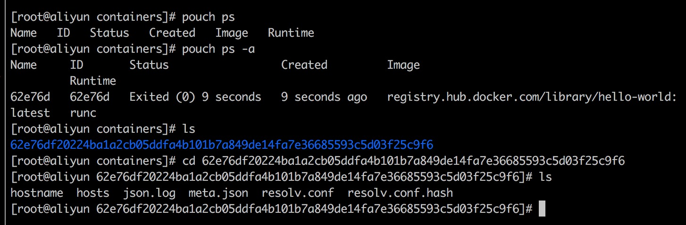

What Does Daemon Do？
pouch daemon 位于daemon这个包内。
type Daemon struct {
config *config.Config
containerStore *meta.Store
// ctrdDaemon controls containerd process
ctrdDaemon *supervisord.Daemon
// ctrdClient is grpc client connecting to the containerd
ctrdClient ctrd.APIClient
containerMgr mgr.ContainerMgr
systemMgr mgr.SystemMgr
imageMgr mgr.ImageMgr
volumeMgr mgr.VolumeMgr
networkMgr mgr.NetworkMgr
server server.Server
containerPlugin hookplugins.ContainerPlugin
imagePlugin hookplugins.ImagePlugin
daemonPlugin hookplugins.DaemonPlugin
volumePlugin hookplugins.VolumePlugin
criPlugin hookplugins.CriPlugin
apiPlugin hookplugins.APIPlugin
eventsService *events.Events
}
pouch daemon是pouch的守护进程，这里也可以看出，daemon 由crtd(containerd)、container、image、volume、network、server等部分组成。
根据上篇文章分析，在main函数里构建了一个 main.go 运行了 d := daemon.NewDaemon(cfg) 返回 daemon 对象。在 传入进去的 cfg 是flag的一些配置参数。NewDaemon 位于 daemon/daemon.go#NewDaemon 中。
NewDaemon 函数
NewDaemon 函数传入是 config 参数（来自于flag命令行） 返回时 daemon 结构体。结构图字段参见上。
第一步：构建containerStore对象。
containerStort 用于保存容器启动、终止（未删除）的信息。

这里保存着容器的基本信息，包括hostname、host（记录本地域名解析）、json.log（保存容器的日志信息）、meta.json（保存容器的基本信息，pouch inspect 命令可以查看到）、resolv.conf（保存dns服务器地址）。当删除这个容器，这些信息也会跟着删除。
containerStort的结构如下
type Store struct {
Config
trieLock *sync.Mutex // trieLock use to protect 'trie'.
trie *patricia.Trie
current *Bucket
backend Backend
}
type Config struct {
Driver string
Buckets []Bucket
BaseDir string
}
这里创建containerStore 保存着 存储驱动（默认是local）, baseDir（默认是 $homedir/containers） Buckets保存，容器的基本元数据信息。如下：
containerStore, err := meta.NewStore(meta.Config{
Driver: "local",
BaseDir: path.Join(cfg.HomeDir, "containers"),
Buckets: []meta.Bucket{
{
Name: meta.MetaJSONFile,
Type: reflect.TypeOf(mgr.Container{}),
},
},
})
第二步：启动containerd
1、首先将 pouch 的一些关于containerd 参数传给 ctdOpt。如：OOMScoreAdjust、ContainerdAddr（containerd二进制文件路径）。
如果 pouch 开启了日志。daemon 将会设置 containerd 日志级别 ’debug‘ 并接管日志。
随后通过 supervisord 带着设置的参数启动 containerd。 并返回 ctrdDaemon 对象。
同理，创建 ctdClient 对象。
随后，创建snapshotter。 > 创建snapshotter之前，要对其进行检查。检查本地环境是否支持（含有）这种 snapshooter。
这里为什么 pouch 使用了 snapshotter?
PouchContainer 中没有了 GraphDriver 和 Layer 的概念，新的存储架构里引入了 Snapshotter 和 Snapshot，从而更加拥抱 CNCF 项目 containerd 的架构设计。
Snapshotter 可以理解为存储驱动，比如 overlay、devicemapper、btrfs 等。Snapshot 为镜像快照，分为两种：一种只读的，即容器镜像的每一层只读数据；一种为可读写的，即容器可读写层，所有容器增量数据都会存储在可读写 Snapshot 中；
Containerd 中容器和镜像元数据都存储在 boltdb 中，这样的好处是每次服务重启不需要通过读取宿主机文件目录信息来初始化容器和镜像数据，而是只需要初始化 boltdb。
moby 项目使用的 gragbdriver. pouch 项目使用的是 snapshotter. 最后，返回 daemon 对象。
return &Daemon{
config: cfg,
ctrdClient: ctrdClient,
ctrdDaemon: ctrdDaemon,
containerStore: containerStore,
}
run daemon 函数
main函数里获取了daemon对象后，创建一个携程运行 daemon 的 run 函数。 函数位于 daemon/daemon.go#run。